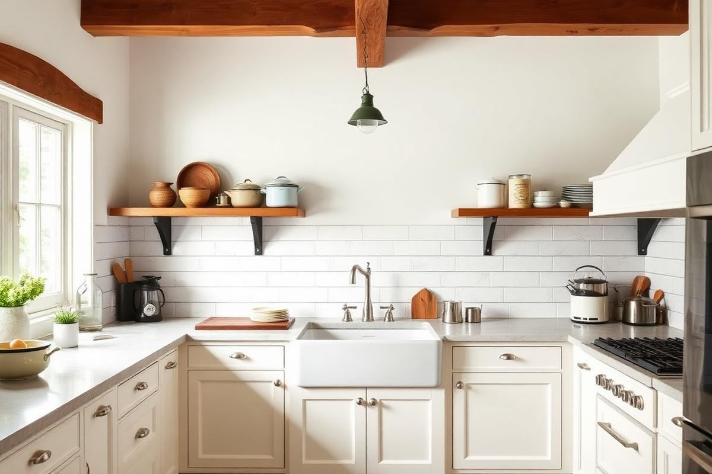
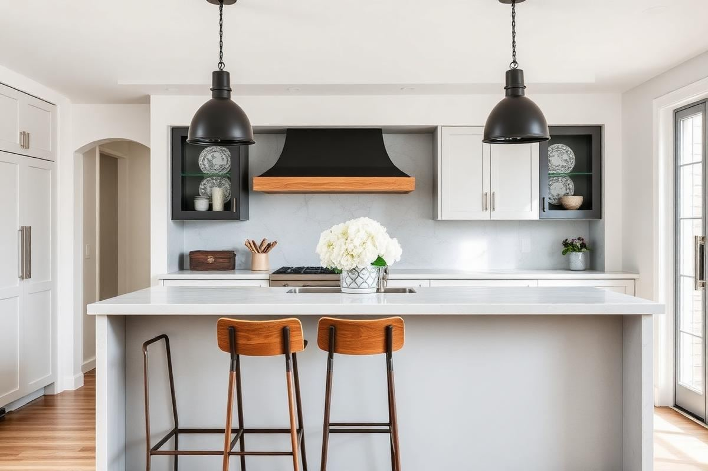

Farmhouse Kitchen Decor: The Modern Take

Farmhouse Kitchen Decor: The Modern Take is one of those topics where a little planning goes a long way. In this guide I walk through the process we use in real homes — not just what looks good in a photo, but what actually holds up over time.
Start here
Before you buy or move anything, measure the space and note how you actually use it. The best-looking room is one that matches how you live, so start with the routines: where you sit, where you drop keys, where the light falls in the afternoon.
The essentials
Focus on the pieces that do the most work. Get those right and the rest of the room comes together with much less effort. Aim for materials that patina rather than degrade, and colors you will still like in five years.
- Choose one clear focal point per room.
- Pick materials that improve with age.
- Layer textures instead of adding more colors.
- Leave visual breathing room — negative space is a design element.
Common mistakes
The mistakes we see most often are matching everything too tightly, over-scaling accessories, and skipping proper lighting. Fix those three and most rooms improve overnight.

Lighting the Farmhouse Way: Beyond the Barn Light
While barn lights are a classic, modern farmhouse lighting offers more nuanced options. The goal is warm, functional illumination that complements, rather than dominates, the aesthetic. Consider a mix of task, ambient, and accent lighting. For island pendants, aim for fixtures with a diameter of 18-24 inches for a standard 6-8 foot island, spaced 30-36 inches apart. Look for materials like brushed brass, antiqued bronze, or even matte black. For recessed lighting, a warm white (2700K-3000K) LED often works best, providing ample light without feeling sterile. Dimmers are non-negotiable for setting the right mood, from bright morning prep to cozy evening meals.
A common mistake is oversizing fixtures or using too many small ones. A single, substantial chandelier over a dining area (if applicable) can be more impactful than several modest options. For a 10’x12’ kitchen, three 6-inch recessed lights are usually sufficient for ambient lighting, supplemented by pendants and under-cabinet task lighting. Avoid anything too ornate or overly industrial; the balance is key.
The Art of Texture: Adding Depth to Your Farmhouse Kitchen
Texture is what transforms a flat space into a layered, inviting one. In a farmhouse kitchen, this means incorporating a variety of tactile surfaces. Think beyond just wood. Shiplap, a classic, is often used on accent walls or island fronts – a 1x6 inch pine shiplap board costs approximately $2-3 per linear foot. Consider a subtle limewash finish on walls for a soft, aged plaster look; a gallon of limewash paint runs $70-100 and covers about 250-300 sq ft. For countertops, a honed or leathered granite or quartz (around $60-120 per sq ft installed) provides a softer, less reflective surface than polished options. Don’t forget textiles – linen dish towels, woven placemats, and even a small, flat-weave rug can introduce warmth.
- Ceramic or earthenware pottery displays on open shelves.
- Woven baskets for storage (e.g., storing onions or fruit).
- Butcher block cutting boards (e.g., 2” thick maple) for both utility and visual warmth.
- Rough-hewn wooden elements, like a reclaimed wood beam or floating shelves.
The key is intentionality; too many competing textures can feel chaotic. Aim for three to five distinct textures that complement each other.
Smart Storage Solutions: Function Meets Farmhouse Form
Modern farmhouse kitchens value both aesthetics and practicality, making smart storage crucial. Open shelving, while popular, needs careful curation to avoid clutter. Instead of full wall-to-wall open shelves, consider strategic placements: two 36-inch wide floating shelves (starting around $50-150 each) flanking a range hood, or above a coffee station. For truly practical storage, integrate pantry solutions like pull-out spice racks (around $80-150 for a base cabinet insert), lazy susans for corner cabinets ($30-70), and deep drawers for pots and pans instead of lower cabinets. A dedicated pantry cabinet, around 24-30 inches wide and 84 inches high, with adjustable shelves, is invaluable, costing $400-1000 for a semi-custom option.
Another often-overlooked solution is a freestanding hutch or a repurposed antique cabinet. A vintage pine hutch, found at an antique market for $300-800, can add character and significant closed storage for dishes or small appliances, preventing them from cluttering countertops. Always measure your space accurately before investing in larger pieces.
The Color Palette: Beyond White Washed Walls
While white and off-white remain foundational, the modern farmhouse palette embraces subtle depth. Don't be afraid to introduce muted greens (e.g., Farrow & Ball 'Mizzle' or Benjamin Moore 'Sage Mountain'), soft blues (Sherwin-Williams 'Quietude'), or warm grays (Benjamin Moore 'Revere Pewter') on cabinetry or an island. A gallon of premium paint is approximately $50-80. Consider contrasting trim or door colors. For instance, white walls with a soft gray-green island can be stunning. For backsplash tiles, rather than stark white subway, explore zellige-inspired tiles with subtle variations (starting $8-15 per sq ft) or classic handmade ceramic tiles in a cream or muted taupe. The goal is to create a serene backdrop that highlights natural materials and textures, not to overwhelm them.
Even a dark accent can work – a deep charcoal range hood or a black-painted pantry door (using a robust cabinet paint like Benjamin Moore 'Advance' for $60-80 per gallon) can provide an anchor without sacrificing the farmhouse feel. Pay attention to undertones; a cool white can feel stark against warm wood tones, so opt for whites with warm gray or beige undertones.
Bringing the Outside In: Natural Elements
The farmhouse aesthetic inherently connects to nature. Incorporating natural elements isn't just about a potted plant; it's about integrating organic forms and textures throughout the space. Start with wood – not just on cabinets, but through cutting boards, serving bowls, and even a substantial wooden beam feature. Reclaimed wood shelves (ranging from $40-200 per linear foot, depending on species and finish) instantly add character. Stone, in unpolished forms like a rough-hewn stone backsplash (real stone tiles start at $10-30 per sq ft) or a soapstone countertop ($70-120 per sq ft), provides an earthy groundedness. Linen and cotton fabrics, with their natural fibers, soften hard surfaces.
Living plants are a must: a small herb garden on the windowsill, a substantial Fiddle Leaf Fig tree in a corner (a 5-6 ft plant costs around $100-200), or even simple cuttings in glass vases. For florals, lean towards wildflowers or dried arrangements rather than overly manicured bouquets. Even a simple bowl of seasonal fruit acts as a natural decor element, bringing in color and life. This connection to the outdoors prevents the space from feeling sterile or overly manufactured. Embrace the imperfections inherent in natural materials.
Hardware & Fixtures: The Devil is in the Details
The small details – hardware and fixtures – can define the modern farmhouse look. For cabinetry, avoid overly ornate or polished chrome. Instead, opt for finishes like matte black, oil-rubbed bronze, brushed nickel, or even unlacquered brass that will patina over time. Cup pulls ($5-15 each) are a classic choice for drawers, paired with simple knob pulls ($3-10 each) for cabinets. Don't mix too many finishes; generally, stick to two, like matte black hardware with a brushed brass faucet.
The sink and faucet are central. A deep single-basin farm sink (fireclay options start around $400-800, stainless steel $300-600) is iconic. Pair it with a bridge faucet or a gooseneck pull-down faucet in a complementary finish. Avoid anything too sleek or ultramodern. If budget allows, consider a pot filler over the range, as this adds both functionality and a touch of vintage charm with its exposed plumbing (typical cost for installation and fixture: $300-800). These elements, though small, contribute significantly to the overall authenticity and functionality.
Key takeaways
- Match the room to how you actually live.
- Anchor with one main piece and clear lighting.
- Layer textures, not colors.
- Leave breathing room around every object.
Frequently asked questions
Where should I start?
Start with the largest piece and the light. Everything else — art, textiles, small objects — is easier to place once those two anchors are set.
What is a realistic budget?
Prioritize the pieces you touch every day. Spend more on those and less on decorative items, which are easy to swap over time.
How long should this last?
A well-chosen main piece should last 10–15 years. Refreshes come through textiles, art, and accessories, not full replacements.

Sophia Bennett is a certified interior stylist and the senior editor at Styleire. She has spent more than eight years helping homeowners and renters create warm, functional interiors, with hands-on experience across small city apartments and family homes. Her work has been informed by close collaboration with independent designers, craftspeople, and product testers.
View full profile →Related reading

Open Kitchen Shelving: When It Works, When It Doesn't
Open shelving looks great in photos. In real kitchens, it is a lifestyle choice, not a style choice.

Kitchen Backsplash Ideas That Still Feel Fresh
Kitchen Backsplash Ideas That Still Feel Fresh — a clear, editor-tested guide covering the essentials without the filler.

Kitchen Color Schemes That Won't Feel Dated
Kitchen Color Schemes That Won't Feel Dated — a clear, editor-tested guide covering the essentials without the filler.